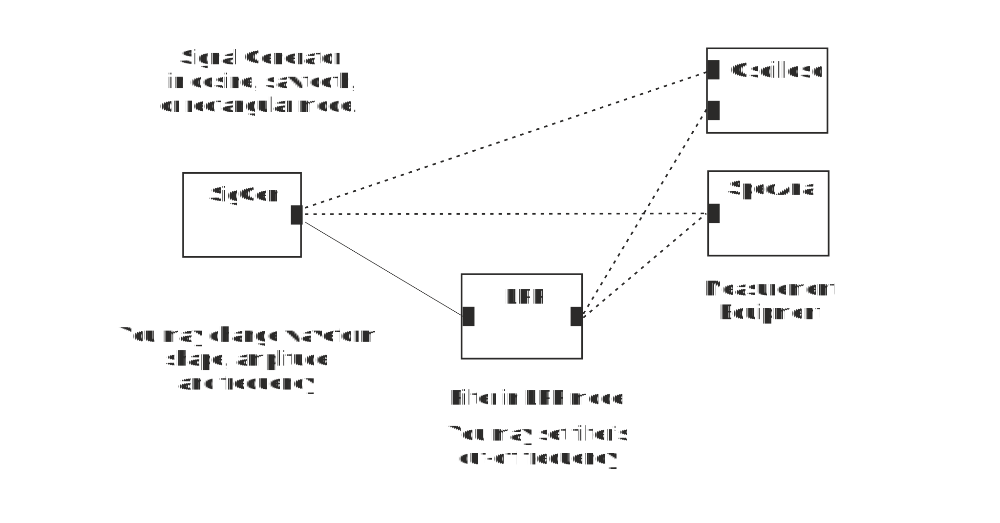

Make a block diagram in Figure 4.
Figure 4 Impact of LPF to Signal shape and spectrum
1. Connect inputs of oscilloscope to the output of the Signal Generator and the other to the output of LPF. Set Cut-off frequency of LPF to 10 kHz and frequency of signal generator to 5 kHz. When signal is a cosine waveform, output waveform of LPF is
2. Increase signal frequency slowly to 8-10-15… kHz. What starts to happen when frequency is around 10 kHz and you still increase it?
3. At cut-off frequency signal level is decreased by 3 dB that is 20*log10 (Vout /Vin ) dB = -3 dB. What is Vout /Vin at cut-off frequency approximately?
4. Change signal generator to rectangular waveform at frequency of 5 kHz. Use oscilloscope to compare signal shape at the input and output of LPF. What do you see?
5. Use Spectrum analyser to compare spectrum of rectangular waveform at the input and output of LPF. What do you see?
6. When high frequency components are attenuated, the signal in time domain:
7. When you increase frequency of the rectangular waveform to 20 kHz
8. This happens because
9. Set signal generator to Cosine waveform and cut-off frequency of LPF to 20 kHz. Compare signal amplitude at output of LPF at frequencies 1 kHz and 20 kHz. At 20 kHz amplitude is compared to 1 kHz amplitude approximately
10. This corresponds to that signal level is reduced by
11. Compare input and output amplitude of LPF at 20 kHz. At output it is reduced approximately by factor of
12. Increase frequency to 40 kHz. Now output compared to input is reduced approximately by factor of
13. This correspond to that signal level is reduced by
14. Increase frequency to 80 kHz. Now output compared to input is reduced approximately by factor of
15. This correspond to that signal level is reduced by
16. When frequency is doubled above cut-off frequency the signal level is reduced by approximately
When you have answered all the questions you can submit your answers.
Test passed. Go to Exercise 3: White Noise in Time and Frequency Domain
Test failed. Consider again answers that are not correct